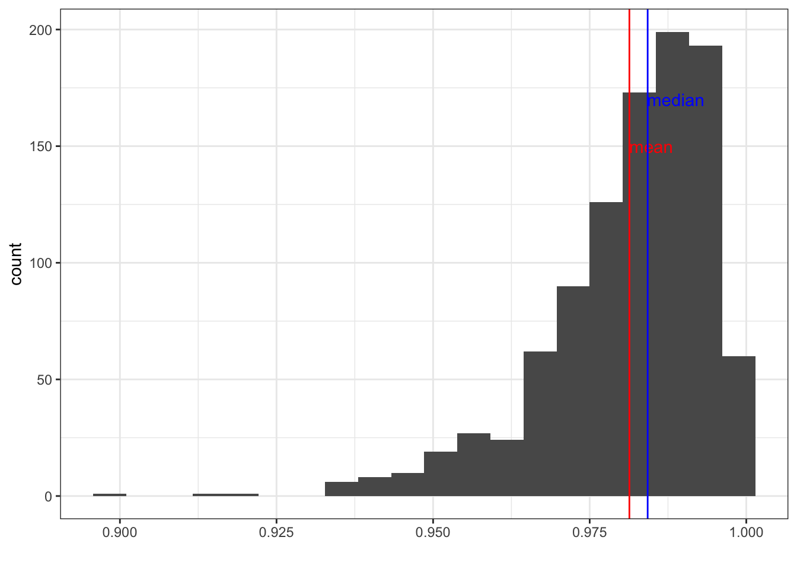

Chapter 4 Descriptive Statistics
Central Tendency, Outliers, and Dispersion
Learning Outcomes
- Revisit what descriptive statistics are and their importance in understanding your data
- Learn / review measures of the central tendency and dispersion and how to conduct them
- Learn how to identify outliers and skewness
Today’s Learning Tools:
Total number of activities: 12
Data:
- Law Enforcement Management and Administrative Statistics (LEMAS)-Body-Worn Camera Supplement (BWCS) Survey
- 2004 Survey of Inmates in State and Federal Correctional Facilities (SISFCF)
Packages:
dplyrggplot2heremodeestmomentsqualvarskimr
Functions introduced (and packages to which they belong)
diff(): Computes differences between values in a numeric vector (base R)dim(): Check the dimensions of anRobject (base R)DM(): Computes deviation from the mode (qualvar)group_by(): Group observations by variable(s) for performing operations (dplyr)IQR(): Compute interquartile range (base R)is.na(): ReturnsTRUEwhen values are missing,FALSEif not (base R)mean(): Compute arithmetic mean (base R)max(): Returns the maximum value (base R)min(): Returns the minimum value (base R)mlv(): Compute the mode (modeest)quantile(): Compute quantiles as per specified probabilities (base R)sd(): Computes standard deviation of a numeric vector (base R)skewness(): Calculate degree of skewness in a numeric vector (modeest)skim(): Provide summary statistics specific to object class (skimr)summarize(): Create new summary variable(s), e.g., counts, mean (dplyr)summary(): Produce summary of model results (base R)table(): Generates a frequency table (base R)var(): Computes variance (base R)
4.1 Revisiting Descriptive Statistics
The field of statistics is divided into two main branches: descriptive and inferential. Much of what you will cover today on descriptive statistics will be a review from last semester, but learning to conduct them in R will be a new learning experience.
So, what are descriptive statistics? If general statistics is concerned with the study of how best to collect, analyse, and make conclusions about data, then this specific branch – descriptive statistics – is concerned with the sample distribution and the population distribution from which the sample is drawn. Basically, descriptive statistics are ways of describing your data.
Similar to last week’s lesson on data visualization, describing your data is important because it helps you identify patterns and anomalies. In addition, it gives others a succinct understanding of your data, so it facilitates good communication. We revisit and learn another three substantive topics today: the central tendency, outliers, and dispersion.
4.1.1 Activity 1: Our preparation routine
We start by doing the usual routine, but with new data on police body-worn cameras:
Open up your existing
RprojectLoad the required packages (listed at the top of this lesson). Some of these are familiar from previous weeks, so you only need to use the function
library()to load them. For packages that we have not used before and are not installed in ourR, you will need to use the functioninstall.packages()first before loading it withlibrary():
# Remember, we only need to do this once whenever we meet a new package and would like to keep it handy in our own R library of packages:
install.packages("modeest")
install.packages("moments")
install.packages("qualvar")
install.packages("skimr")# All of these are now in our R library of packages, but we need to load them, or 'bring them to life', to use their functions:
library(dplyr)
library(ggplot2)
library(here)
library(modeest)
library(moments)
library(qualvar)
library(skimr)You will have downloaded the datasets from Blackboard as usual, ensuring the datasets have been moved into the subfolder you had created from Lesson 2 called ‘Datasets’.
For now, open only the 2016 LEMAS-BWCS dataset (37302-0001-Data.rda). These data are from the Inter-university Consortium for Political and Social Research (ICPSR) website and you can find them by using the dataset name, which refers to the ICPSR study number. This time, data are stored in an
Rdata file format (.rda). Always check for the type of file format the data are in - this determines what codes and packages (if any) you will need to use to load the data intoR.For this type of dataset, as it is in an ‘.rda’ data file format, we will need to use the
load()function to import the data frame into our environment, specifying your working directory usinghere()like we have in Lesson 2, section 2.1.
- Name the data frame
bwcsby using the<-assignment operator. Another way of looking at it is you are putting the dataset into a ‘box’ that you will call ‘bwcs’. It will appear in the Environment pane like all objects you create inR.
- Use the function
View(bwcs)to ensure the file is loaded and to get to know your data. You can also use the functiondim(bwcs)to see the number of observations and variables.
4.2 Today’s 3
Two primary ways of describing your data have to do with the central tendency and their dispersion. We also learn about outliers.
4.2.1 Central Tendency
Central tendency refers to a descriptive summary of the centre of the data’s distribution; it takes the form of a single number that is meant to represent the middle or average of the data. The mean, median, and mode are common statistics of the central tendency.
The mean is the average and it is useful when we want to summarise a variable quickly. Its disadvantage is that it is sensitive to extreme values, so the mean can be distorted easily.
To address this sensitivity, the median is a better measure because it is a robust estimate, which means that it is not easily swayed by extreme values. It is the middle value of the distribution.
The mode helps give an idea of what is the most typical value in the distribution, which is the most frequently occurring case in the data. While mean and median apply to numeric variables, the mode is most useful when describing categorical variables. For example, you may want to know the most frequently occurring category.
4.2.1.1 Activity 2: Recap of how to obtain the mean and median
In Lesson 1, you were introduced to the functions mean() and median(). There is no direct function in base R to calculate the mode, but we will learn one way to do so soon. First, find only the mean and median for the following six numbers:
Type your answers in the group google doc.
4.2.1.2 Activity 3: Levels of measurement
From today’s data, we are interested in exploring the adoption of body-worn cameras (BWCs) and their usage in a sample of agencies. The variables that will help us explore this is Q_10A because it measures whether the agency adopted BWCs as of 2016 and Q_12 because it measures the number of cameras that agencies reported using.
Let us say we want to learn about these variables. The first step to choosing the appropriate analysis for our variables, Q_10A and Q_12, is establishing: what are their levels of measurement?
To review levels of measurement, refer to Lesson 2 (section 2.4.1). Have a think and record your answers for each variable in the google doc.

Figure 4.1 What are the levels of measurement?
Now that we have established the level of measurement for our variables, what type of object does R think these variables are? In other words, what are these variables classed as? Recall that we can use the class() function to answer this:
## [1] "factor"Q_10A is classed as a factor. Another function that will return what the variable is classed as but also the specific levels is the attributes() function:
## $levels
## [1] "(1) Agency has acquired in any form (including testing)"
## [2] "(2) Agency has not acquired"
##
## $class
## [1] "factor"This factor variable has two levels: ‘(1) Agency has acquired in any form (including testing)’ and ‘(2) Agency has not acquired’.
Now, we want to know the mode – which level or category appears most frequently in our data set. We use the function mlv() (acronym for most likely values) from the modeest package to answer this question:
## [1] (2) Agency has not acquired
## 2 Levels: (1) Agency has acquired in any form (including testing) ...The output returns the answer as: ‘(2) Agency has not acquired’. It also, conveniently, prints all the levels so we can see what are the other categories.
If you want to cross check your answer obtained from the mlv() function, create a frequency table using the table() function:
##
## (1) Agency has acquired in any form (including testing)
## 1915
## (2) Agency has not acquired
## 2013Indeed, there are 2,013 observations where the agency had not acquired any body worn cameras, which is more than the 1,915 observations where the agency had acquired body worn cameras in any format.
We could also run the mlv() function and save the output in an object rather than print the answers into the console. Here, we save to the object called mode_adopted:
## [1] (2) Agency has not acquired
## 2 Levels: (1) Agency has acquired in any form (including testing) ...
Our exploration into the adoption of BWCs has so far yielded the knowledge that the majority of agencies had not acquired BWCs as of 2016. But how about those that have done so? To what extent do they use BWCs? This is where variable Q_12 comes in handy:
4.2.1.3 Activity 4: The extent of body worn camera use
Similar to the previous activity, obtain the class of the variable Q_12. Type the code you used and what class the variable is in your group google doc.
After you do so, we get to know more about Q_12. First, let us get the minimum value:
## [1] 0And then the maximum:
## [1] 1200Above we used the functions min() and max(), and inside we put the name of the specific variable we want the minimum and maximum of and the name of the data frame to which it belongs (hence, bwcs$Q_12). We also added the code na.rm=TRUE after the comma.
What the heck is na.rm? When calculating measures of central tendency, you need to tell R that you have missing (i.e., NA) observations. Using na.rm = TRUE will exclude observations that have already been defined as missing. If we do not specify this code, it will instead return NA for agencies that have acquired BWCs because Q_12 has missing data.
Now let us find the average number of BWCs used by agencies that have responded ‘Yes, acquired’ in Q10_A. We will use two ways to determine the mean: the dplyr way and the usual base R way. When we refer to base R, it means that these functions are already included in R, so there is no need to install additional packages.
We start with dplyr. Now, we will do two things: first, we use the group_by() function in order to group our observations by the values of the Q_10A variable. The values are ‘1’ and ‘2’, and are essentially the categories ‘(1) Agency has acquired in any form (including testing)’ and ‘(2) Agency has not acquired’. Then, we use the summarise() function, to tell us some summary statistics (in this case the mean, using the mean() function) for each group.
We did a similar thing last semester whereby we obtained these descriptive statistics for each value of a particular variable when we examined the relationship between age and the reason someone was arrested. Here, we are looking for the values of how many body worn cameras are used (Q_12) between whether they are were acquired or not (Q_10A):
# If you do not remember what '%>%' means, refer to Lesson 2, section 2.4.2.2
bwcs %>%
group_by(Q_10A) %>%
summarize(mean_deployed = mean(Q_12, na.rm = TRUE))## `summarise()` ungrouping output (override with `.groups` argument)## # A tibble: 2 x 2
## Q_10A mean_deployed
## <fct> <dbl>
## 1 (1) Agency has acquired in any form (including testing) 31.8
## 2 (2) Agency has not acquired NaNWe see that in agencies where BWCs were acquired, the average number of cameras is about 32. But in agencies where BWCs were not acquired, the average is NaN. What is this?

Figure 4.2 NaN??
NaN in R stands for Not a Number. The reason is all the values for the number of cameras used (in reference to Q_12) among agencies that had not acquired cameras (in reference Q_10A) is missing (NA). It makes sense that this should be so, because if agencies responded in Q_10A that they had not acquired any BWCs, then why would we expect them to give a number in Q_12 on how many cameras they used? Q_12 does not apply to them.
Now, the above was the dplyr way. But you could use the base R way with the mean() function:
## [1] 31.82024The answers from both ways are the same: 31.8 . This is because we know that one group (agencies that have not acquired BWCs) do not contribute to the average. We learn both methods because there may be situations where one is more appropriate than the other (e.g., maybe you want to see means for the individual categories when they are not NaN).
Next, we identify the median, as, remember, the mean is susceptible to outliers. To get the median for each group, we use summarise() but, this time, we include the median() rather than the mean() function:
# Use the same format as above, but this time use the median() function
# dplyr way
bwcs %>% group_by(Q_10A) %>% summarise(med_deployed = median(Q_12, na.rm = TRUE))## `summarise()` ungrouping output (override with `.groups` argument)## # A tibble: 2 x 2
## Q_10A med_deployed
## <fct> <dbl>
## 1 (1) Agency has acquired in any form (including testing) 8
## 2 (2) Agency has not acquired NAWhat about the base R way?
## [1] 8Again, both methods to obtain the median are the same, but the median differs a lot from the mean: it is 8.
What does this mean? There must be a few agencies that use a lot of body worn cameras, which distorts our mean to appear as if the majority of agencies use 32 cameras. When the median and the mean are very different from each other, we have what is known as skew.
Now what if we want to calculate these descriptive statistics at once? This is where the dplyr way is most handy. To obtain these statistics together, we specify that we want to create four columns that will appear in the output as a table:
- mean_deployed, using the
mean()function
- mean_deployed, using the
- median_deployed, using the
median()function
- median_deployed, using the
- mode_deployed, using the
mlv()function
- mode_deployed, using the
- total, using the
sum()function
- total, using the
# Table containing the mean, median, mode, and total number of BWCs used
bwcs %>%
group_by(Q_10A) %>%
summarise(mean_deployed = mean(Q_12, na.rm = TRUE),
median_deployed = median(Q_12, na.rm = TRUE),
mode_deployed = mlv(Q_12, method='mfv', na.rm = TRUE),
total = sum(Q_12, na.rm = TRUE))## `summarise()` ungrouping output (override with `.groups` argument)## # A tibble: 2 x 5
## Q_10A mean_deployed median_deployed mode_deployed total
## <fct> <dbl> <dbl> <dbl> <dbl>
## 1 (1) Agency has acquired in ~ 31.8 8 1 60363
## 2 (2) Agency has not acquired NaN NA NaN 0Another handy package for descriptive statistics is skimr. The function skim () produces measures of central tendency and measures of dispersion (we will learn more on these in the later section), and number of missing values.
A great feature is that it also includes a histogram of the numeric variables specified. If you do not want to specify any variables, skim() will summarise your entire data frame, and this may be good, but it depends on the size of your dataset:
# Ensure the package 'skimr' is loaded or this will not work
# Produce a summary of your Q_12 variable, grouped by Q_10 using skim()
bwcs %>%
group_by(Q_10A) %>%
skim(Q_12)| skim_type | skim_variable | Q_10A | n_missing | complete_rate | numeric.mean | numeric.sd | numeric.p0 | numeric.p25 | numeric.p50 | numeric.p75 | numeric.p100 | numeric.hist |
|---|---|---|---|---|---|---|---|---|---|---|---|---|
| numeric | Q_12 | (1) Agency has acquired in any form (including testing) | 18 | 0.9906005 | 31.82024 | 92.26974 | 0 | 3 | 8 | 20 | 1200 | ▇▁▁▁▁ |
| numeric | Q_12 | (2) Agency has not acquired | 2013 | 0.0000000 | NaN | NA | NA | NA | NA | NA | NA |
4.2.2 Outliers
Recall the main disadvantage of the mean: it is not robust to extreme values, otherwise known as outliers.
What exactly constitutes an outlier? Generally, an outlier is any observation that shows an extreme value on one of our variables. There are different ways to define what an outlier is, but, in this class, we use the interquartile range (IQR) to do so.
The IQR is another robust estimate and is the 75th percentile observation (the third quartile [Q3]) minus the 25th percentile observation (the first quartile [Q1]) in your distribution:
\[ IQR= Q3 - Q1 \]
A popular method for determining outliers is known as Tukey fences. According to this method, outliers are seen as falling outside a lower or an upper inner fence. They are calculated from the following:
\[ Lower~ inner~ fence = Q1 - (1.5*IQR)\]
\[ Upper~inner ~ fence = Q3 + (1.5 * IQR) \]
In addition, extreme outliers are seen as falling outside a lower and upper outer fence and can be calculated from the following:
\[ Lower~ outer ~fence = Q1 - (3 * IQR)\]
\[ Upper~ outer~ fence = Q3 + (3 * IQR) \]
To visualise this, see Figure 4.3:

Figure 4.3 Tukey fences
4.2.2.1 Activity 5: Determining outliers using Tukey fences
We obtain the IQR of our Q_12 variable using the IQR function, and save this into an object called bwc_deployed_iqr:
It is now saved as an object and holds the value for the IQR:
## [1] 17Next, we obtain the 1st and 3rd quartiles of the Q_12 variable using the quantile() function and place them in objects too:
bwc_deployed_1st <- quantile(bwcs$Q_12, 0.25, na.rm = TRUE)
bwc_deployed_3rd <- quantile(bwcs$Q_12, 0.75, na.rm = TRUE)Now, we calculate the Tukey fences and put them each in separate objects.
The lower inner fence:
## 25%
## -22.5The upper inner fence:
## 75%
## 45.5You can also calculate the ‘outer fences’ which are considered extreme outliers:
## 25%
## -48## 75%
## 71Let us see how many agencies are considered outliers and extreme outliers on how many BWCs they use. We revisit the filter() function for this. (See Lesson 2, section 2.4.3.1 .) Remember that we filter to keep all rows that meet a specific condition. In this case, we want all observations whose value for the variable Q_12 is an outlier (outside the inner fences but within the outer fences) and an extreme outlier (outside the outer fences). We will save them in separate objects called outliers and outliers_extreme:
and
These new objects are now in our environment (that Environment pane in the top right of your RStudio). We can look at their characteristics on the number of BWCs used with the summary() function:
## Min. 1st Qu. Median Mean 3rd Qu. Max.
## 46.0 60.0 100.0 162.1 167.2 1200.0and
## Min. 1st Qu. Median Mean 3rd Qu. Max.
## 72.0 100.0 130.0 215.4 241.2 1200.0In your group google doc, type your answers to the following: (1) lower and upper inner fences, (2) lower and upper outer fences, and (3) minimum of outliers and outliers_extreme.
4.2.2.2 On Skewness
Related to outliers is skewness. This has to do with the shape of the distribution. You might remember from last semester we discussed something called the bell curve, or normal distribution. This is how you expect your data to look if the mean and the median are the same exact value, and your data are distributed equally on either side of this value.
Here is a normal distribution (Figure 4.4):

A skewed distribution would pull the observations more so to the left or to the right, and you would have a long tail on either side. This would also cause your mean and median to be further apart.
Here is a right skewed distribution (Figure 4.5):

And here is a left skewed distribution (Figure 4.6):

So, how can we tell if our data are skewed? We can tell by visualising it!
4.2.2.3 Activity 6: Visualizing skewness using a histogram
When your distribution is skewed, the majority of cases veer more to the left or right of the distribution, with a tail of outliers. An initial way of checking for skewness is to use a histogram, like from last week.
# To create a histogram of number of BWCs used, we will use the `ggplot()` function and the geometry for histogram which is `geom_histogram()`
# Ensure the package ggplot2 is loaded
ggplot(data = bwcs, mapping = aes(x = Q_12)) +
geom_histogram(bins = 15, fill = "red") +
labs(x = "Number of BWCs Deployed", y = "Number of Agencies") +
ggtitle("Histogram of Number of BWCs Deployed") +
theme(plot.title = element_text(hjust = 0.5)) ## Warning: Removed 2031 rows containing non-finite values (stat_bin).
What do you observe from the histogram? Discuss in your groups, or reflect if you are in the quiet room. What do you think the number of BWCs may depend on? Size of the agency? Willingness to adopt BWCs? Are you surprised by this data?

Figure 4.7 Police Body Worn Cameras
From our histogram, we see that most agencies used fewer than 250 BWCs and only a small proportion deployed more than 800.
Another way of checking for skewness is through the skewness() function from the moments package. Skewness is determined by the following:
- 0 = no skewness as it is a symmetrical distribution
- positive value = means distribution is positively skewed or skewed right
- negative value = means distribution is negatively skewed or skewed left
We calculate skewness for our variable Q_12and put it into an object called bwc_skew:
Now print the result. Will the skewness coefficient indicate negative, positive, or no skewness?
## [1] 7.640767We see a positive skew!
From the two ways of checking for skewness, Q_12 is an asymmetric distribution known as a positively skewed distribution – one tail of the distribution is longer than the others because of outliers on the right side.
4.2.3 Measures of Dispersion
What is meant by dispersion is the spread of values from the one value chosen to represent them all. That one value is usually the mean, or in the case of categorical variables, the mode. This is important because the single number to summarise our data might often mask variation. Last semester, we read The Tiger That Isn’t and you might remember the section about the ‘white rainbow’. We know the vibrancy of each of the colours of the rainbow, but if we combined these colours, they would form a bland white band in the sky - the average of all the colours is white. If we just represented the rainbow by the average, we would miss quite a lot!

Figure 4.8 Double rainbow?!
Let us explore how we measure dispersion, and how we can interpret this to draw conclusions about the data.
4.2.3.1 Activity 7: Loading the other dataset
We learn about measures of dispersion using another dataset from the ICPSR website. The Survey of Inmates in State and Federal Correctional Facilities (SISFCF) survey has been conducted periodically since 1976, and the current survey (2004) data (04572-0001-Data.rda) can, too, be accessed at the ICPSR website and downloaded as an .rda file. Follow the same steps with loading the data as with the previous data on BWCs. Now, for this dataset, we do the following as well:
- After the data loads into
RStudio, it is now called ‘da04572.0001’. Put this into an object calledinmatesurvey04by using the<-assignment operator.
Once finished with this activity, you will find your new data frame, inmatesurvey04, in the Environment pane.
4.2.3.2 Dispersion in Nominal and Ordinal Variables
We learn how to conduct two measures of dispersion in R for categorical variables: the variation ratio and the index of qualitative variation:
The variation ratio (VR) tells us the proportion of cases that are not in the modal category – basically cases not in the most frequent or ‘popular’ category. The formula for the variation ratio (VR) is:
\[VR = 1 – ({\frac {N~modalcat~} {N~total~}})\]
\(N~modalcat\) refers to the frequency of observations in the modal category, and \(N~total~\) refers to the total number of observations. This formula states that VR is equal to 1 minus the proportion of observations that are in the modal category, which is the same as saying the proportion of observations that are not in the modal category.
4.2.3.3 Activity 8: Calculating the variation ratio
Now, for example, we are interested in knowing whether the modal category describes the overall work histories prior to arrest of federal inmates pretty accurately, or if there is a lot of variation in responses from inmates. To do so, we use the variable V1748 which tells us about their work histories prior to arrest.
We can look at a frequency table:
##
## (1) Full-time (2) Part-time (3) Occasional (7) Don't know (8) Refused
## 2180 284 65 0 1Or we can use skim:
| skim_type | skim_variable | n_missing | complete_rate | factor.ordered | factor.n_unique | factor.top_counts |
|---|---|---|---|---|---|---|
| factor | data | 1156 | 0.6863809 | FALSE | 4 | (1): 2180, (2): 284, (3): 65, (8): 1 |
Then, we check if we have any observations defined as missing using is.na to get a summary of missing cases:
##
## FALSE TRUE
## 2530 1156This tells us that there are 2,530 complete observations and 1,156 missing ones.
We could tell from the tables above that ‘Full-time’ is the mode, but we can also get R to provide the mode and save it in an object:
## [1] (1) Full-time
## 5 Levels: (1) Full-time (2) Part-time (3) Occasional ... (8) RefusedWhat about the variation ratio? To get this, we create two objects: one for total number of observations and, in the other object, only the numbers who reported the modal category, which is Full-time (1).
To create the first object, get the number of total observations. Store this value in the object n_employed:
# The '!' next to 'is.na' is telling R to only keep observations that are not missing
n_employed <- inmatesurvey04 %>%
filter(!is.na(V1748)) %>%
summarize(n = n())To create the second object, store the value ‘full-time’ in the object n_mode:
Finally, we can calculate the proportion. Store this value in the object proportion_mode:
We can use this to get the variation ratio. To do this, subtract the proportion of cases in the modal category from 1 .
## n
## 1 0.1383399The VR is 0.1383, meaning that the work history among federal inmates prior to arrest is relatively concentrated in the modal category of full-time employment. This is because the smaller the VR, the larger the proportion of cases there are concentrated in the model category.
4.2.3.4 Activity 9: Onto the Index of Qualitative Variation (IQV)
The IQV is different from the VR because it considers dispersion across all categories, whereas the VR only views dispersion in terms of modal versus non-modal.
The IQV lies between 0 and 1 and tells you the variability of the distribution. The smaller the value of the IQV, the smaller the amount of variability of the distribution. We use the DM() function from the qualvar package, which stores frequencies of a categorical variable in a vector:
# Get the index of qualitative variation for the same variable, V1748
IQV<-as.vector(table(inmatesurvey04$V1748))
DM(IQV, na.rm = TRUE)## [1] 0.1729249What is the value that you get in the output? Type the value in your google doc and what you think this value means.
4.2.3.5 Dispersion in Interval and Ratio Variables
These measures of dispersion are the most familiar because they are defined as the spread of values around a mean. We revisit three of these: the range, variance, and standard deviation.
4.2.3.6 Activity 10: The range
The range is the difference between the maximum and minimum value in a given distribution. We use the ratio-level variable V2254, a measure of the age at which inmates stated they first started smoking cigarettes regularly as an example:
## $value.labels
## Refused Don't know Never smoked regularly
## 98 97 0Note that this variable has codes that do not indicate the number of times smoked. These are 0 (never smoked); 97 (Don’t know); and 98 (Refused). We notice that these categories are not about smoking and including these will give us an incorrect result. To resolve this, we must convert irrelevant categories into missing data.
First, we create a new variable so we do not write over the original, calling it age_smoker_range using the mutate() function. This is a duplicate of the V2254 variable, but we will recode each of the irrelevant values (0, 97, 98) as NA by using the na_if() function from the dplyr package.
# We make this new variable using the values from the variable 'V2254'
# Then we include it into our data frame 'inmatesurvey04' by specifying the assignment operator
inmatesurvey04 <- inmatesurvey04 %>%
mutate(age_smoker_range = V2254,
age_smoker_range = na_if(age_smoker_range, 0),
age_smoker_range = na_if(age_smoker_range, 97),
age_smoker_range = na_if(age_smoker_range, 98),
)The range () function prints the minimum and maximum values.
## [1] 1 57## [1] 56What is the range? Input the answer in your google doc.
BUT you can see something strange while figuring out the range: the minimum is one year old! This may be something we want to exclude in future analyses as it might not be valid – maybe a mistake in coding – so conducting these descriptive statistics that you have been doing can help with tidying your data.
4.2.3.7 Activity 11: Variance
Now, the variance ( \(s^2\) ) is about spread, specifically the sum of the squared deviations from the mean, then divided by the total number of observations. The equation looks like this:
\[ s^2 = \frac{\sum(x - \mu)^2}{N}\]
We use the function var() from the stats package that comes already preinstalled in base R.
We use the variable V2529, which records the number of times inmates reported being written up for verbally assaulting a prison staff member as an example:
## Min. 1st Qu. Median Mean 3rd Qu. Max. NA's
## 1.00 1.00 1.00 31.45 3.00 998.00 3545## $value.labels
## Refused Don't know
## 998 997Now let us create a new variable so we do not write over the original one. We do this so we can recode ‘997’ and ‘998’ values as missing - you can see these stand for ‘Refused’ and ‘Don’t know’ respectively.
inmatesurvey04 <- inmatesurvey04 %>%
mutate(verb_assault_var = V2529,
verb_assault_var = na_if(verb_assault_var, 997),
verb_assault_var = na_if(verb_assault_var, 998),
)Now let us calculate the variance:
## [1] 82.64384The variance is 82.6, which is fairly dispersed, but if you got to know the data and this variable, you will notice that one inmate self-reported 99 verbal assaults, so this will have had an influence on the variance.
4.2.3.8 Activity 12: Standard deviation
Last, we learn about the standard deviation (SD), which is the square root of the variance. The smaller it is, the more concentrated the observations are around the mean, while larger values reflect a wider distance from the mean. In other words, the SD tells us how well the mean represents our data. Too large, then the mean is a poor representation, because there is too much variability. We use the variable verb_assault_var as an example:
# Calculate the standard deviation of the 'verb_assault_var' variable and save it to an object
sd <- sd(inmatesurvey04$verb_assault_var, na.rm = TRUE)
sd## [1] 9.090866Recall that the SD is the square root of the variance. You can double check to see if the SD, squared, matches the variance. Create a new object, var2, by taking the square of the standard deviation:
## [1] 82.64384Yes, it does match!
The SD is 9.09087, meaning that this number of verbal assaults is one standard deviation above and below the mean, so the majority of reported verbal assaults, about 68% of them (more on the 68-95-99.7 rule next week), should fall within 9.09 above and below the mean.
4.3 SUMMARY
Descriptive statistics was the name of the game today. These are measures we use to describe our data. First, we learned about measures of central tendency: the mean, median, and mode. Second, pesky outliers were examined along with their cousin skewness. A way of addressing outliers was through the robust estimate, the interquartile range. With skewness, visualizations were used to ascertain whether the distribution could be positively skewed. Third, we learned all about measures of dispersions: two for nominal and ordinal variables – the variation ratio and the index of qualitative variation – and three for interval and ratio variables – the range, variance, and standard deviation. In some situations we found ourselves, missing values appeared. This is actually very common in data, so we addressed these with the R argument na.rm.
Homework time!
4.3.1 Answers to Activities (where applicable)
1. -
2. 199.33= mean(c(345, 100, 250, 100, 101, 300)); 175.5= median(c(345, 100, 250, 100, 101, 300))
3. Q_10A: binary categorical; Q_12: ratio/ discrete numeric
4. class(bwcs$Q_12) # we see this is a numeric variable
5. outliers: any agency that has 46 or more (upper inner fence) or -22.5 (lower inner fence though this is not a likely scenario) body worn cameras; extreme outliers: any agency with more than 71 (upper outer fence) or -48 (lower outer fence- though, again, unlikely scenario) body worn cameras ; minimum: 46 (outlier) and 72 (outlier extreme)
6. -
7. -
8. -
9. The value is 0.1729, meaning that there is not much dispersion across the categories. This supports the result from the VR.
10. The range of the age when federal inmates started smoking is 56.
11. -
12. -